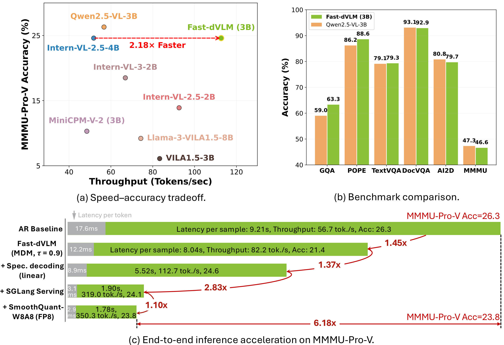
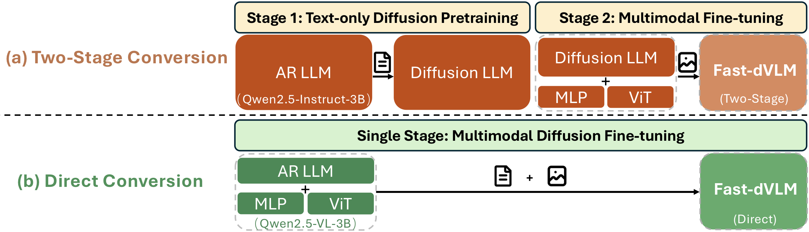
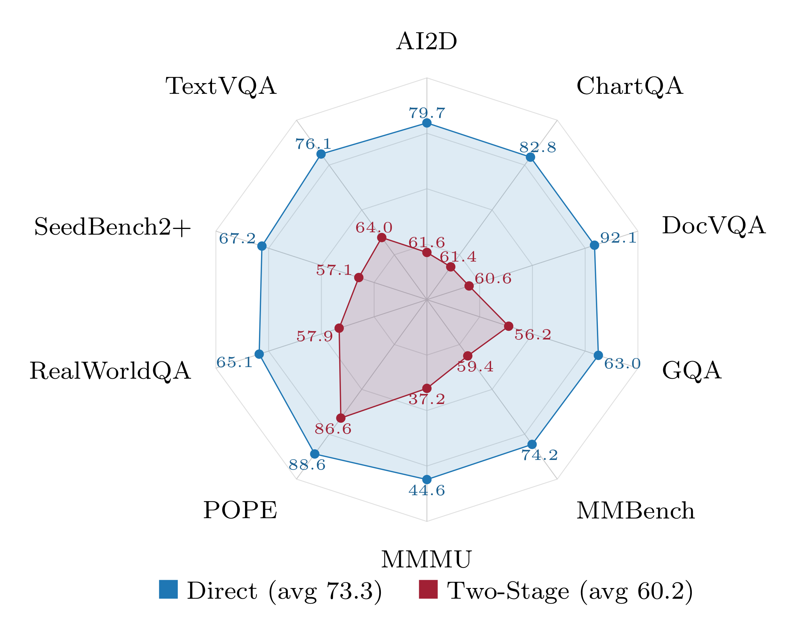
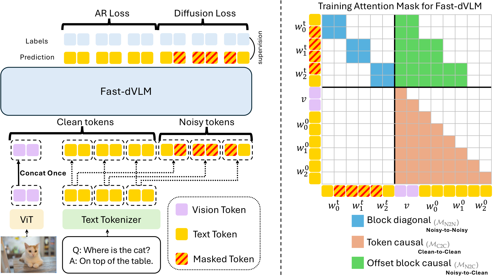
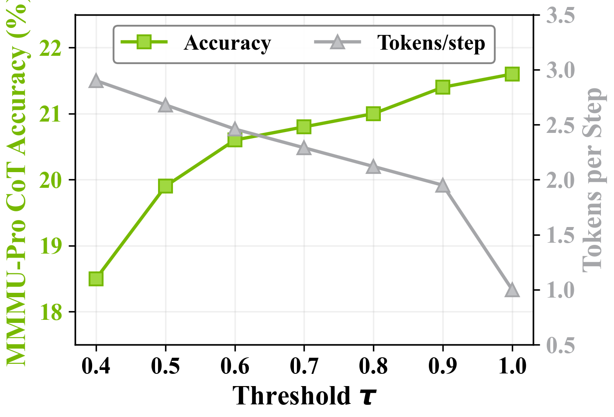
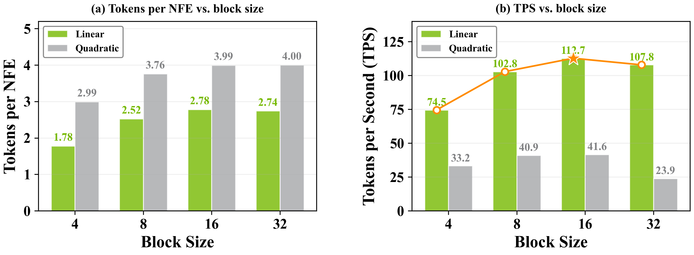
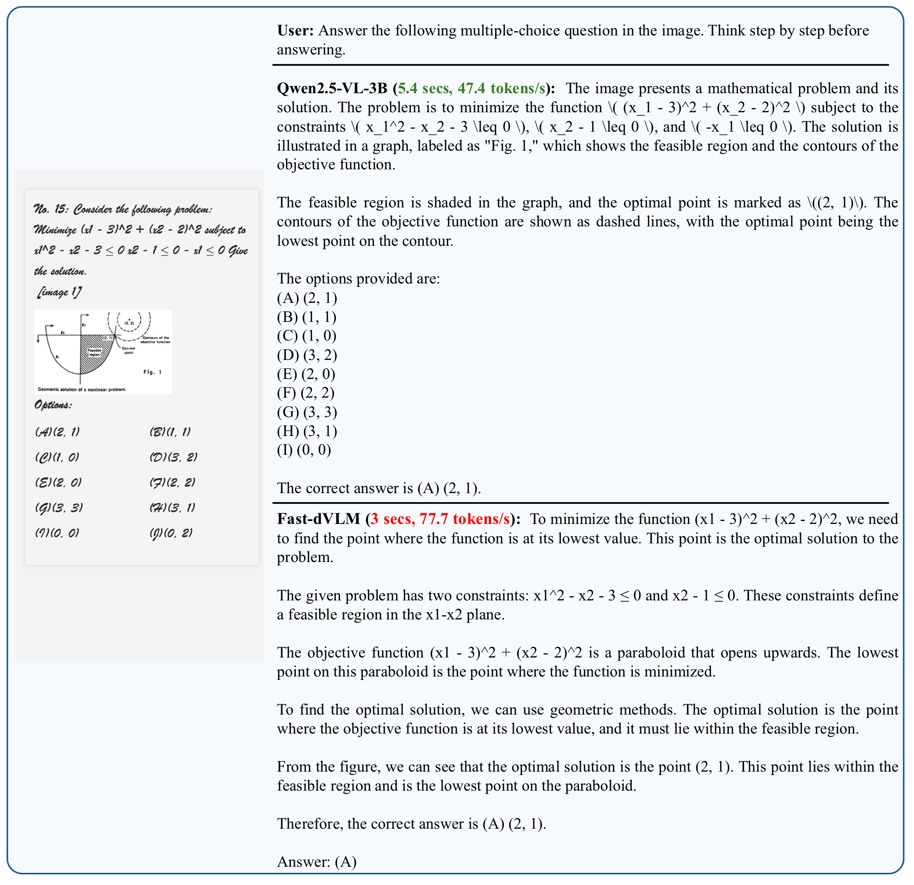
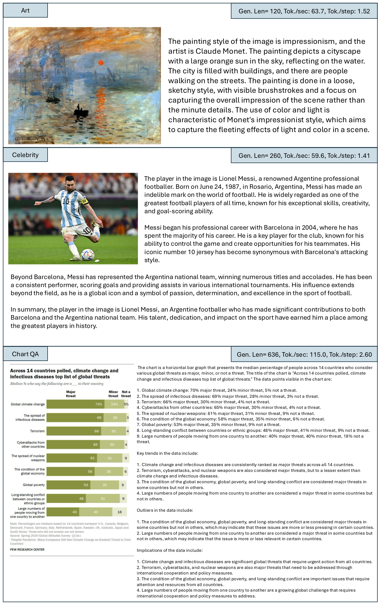

Realtime throughput comparison between Fast-dVLM and Qwen2.5-VL-3B.
About Fast-dVLM
Vision-language models (VLMs) predominantly rely on autoregressive decoding, which generates tokens one at a time and fundamentally limits inference throughput.
This limitation is especially acute in physical AI scenarios such as robotics and autonomous driving, where VLMs are deployed on edge devices at batch size one, making AR decoding memory-bandwidth-bound and leaving hardware parallelism underutilized.
We present Fast-dVLM, a block-diffusion-based VLM that enables KV-cache-compatible parallel decoding and speculative block decoding for inference acceleration.
We systematically compare two AR-to-diffusion conversion strategies: a two-stage approach that first adapts the LLM backbone with text-only diffusion fine-tuning before multimodal training, and a direct approach that converts the full AR VLM in one stage.
Under comparable training budgets, direct conversion proves substantially more efficient by leveraging the already multimodally aligned VLM.
We introduce a suite of multimodal diffusion adaptations—block-size annealing, causal context attention, auto-truncation masking, and vision-efficient concatenation—that collectively enable effective block diffusion in the VLM setting.
Extensive experiments across 11 multimodal benchmarks show Fast-dVLM matches its autoregressive counterpart in generation quality.
With SGLang integration and FP8 quantization, Fast-dVLM achieves over 6× end-to-end inference speedup over the AR baseline.

Direct vs. Two-Stage Conversion
We compare two strategies for converting a pretrained AR VLM into a block-diffusion model:
•
Two-stage path:
Stage 1 converts only the LLM backbone via text-only diffusion fine-tuning; Stage 2 attaches the vision encoder and MLP projector and jointly fine-tunes the entire model on multimodal data.
•
Direct path:
The complete AR VLM is directly fine-tuned for block-diffusion on multimodal data in a single stage, yielding a simpler pipeline that leverages the pretrained multimodal alignment.

Under comparable training budgets (both trained on ~2M samples for a single epoch), the direct path achieves a substantially higher average score (73.3 vs. 60.2), outperforming the two-stage path on all 10 benchmarks.

Benchmark comparison between direct and two-stage conversion paths across 10 multimodal tasks.
Training Architecture
Both paths share the same training pipeline. Only response text tokens are corrupted: a noisy stream is constructed by masking response positions and concatenated with the clean stream. The attention mask enforces three rules:
•
N2N: Noisy tokens attend bidirectionally within their block for parallel denoising.
•
N2C: Noisy tokens attend to clean tokens from preceding blocks, including vision tokens.
•
C2C: Clean tokens follow token-level causal attention, enabling joint AR loss training and AR decoding at inference.

Training Recipe
•
Block-Size Annealing:
A curriculum that progressively increases the block size, allowing the model to learn fine-grained denoising before tackling larger corruption spans.
•
Auto-Truncation Masking:
Automatically truncates each response's last block at the response boundary, preventing cross-turn leakage in multi-turn dialogue while preserving block-parallel denoising.
•
Vision-Efficient Concatenation:
Since vision embeddings are never corrupted, they are included only in the clean stream. On Qwen2.5-VL-3B (H100, context length 2048), this reduces peak memory by 15.0% and training time by 14.2%.
•
Joint Objective:
The total loss combines a diffusion loss with a causal LM loss (α=β=0.5), learning parallel denoising while preserving AR generation capability.
Benchmark Results
We evaluate Fast-dVLM on 11 multimodal benchmarks. On short-answer tasks, Fast-dVLM with speculative decoding achieves an average score of 74.0, exactly matching the AR baseline, while achieving 2.63× Tokens/NFE.
Among diffusion VLMs, Fast-dVLM achieves the best results on 8 out of 11 short-answer benchmarks.
Model
AI2D
ChartQA
DocVQA
GQA
MMBench
MMMU
POPE
RWQA
SEED2+
TextVQA
Avg
MMMU-Pro-V
Tok/NFE
Autoregressive Vision-Language Models
VILA-1.5-3B
58.0
53.0
44.3
61.4
60.5
31.8
86.8
53.2
41.2
58.2
54.8
6.1
1.00
MiniCPM-V-2
65.0
59.2
69.8
51.7
66.3
37.9
86.5
56.3
52.5
74.4
62.0
10.3
1.00
Intern-VL-2.5-4B
81.3
77.8
91.1
61.0
80.7
50.0
89.3
64.6
67.0
78.8
74.2
24.6
1.00
Qwen2.5-VL-3B
80.8
84.0
93.1
59.0
76.9
47.3
86.2
65.1
68.6
79.1
74.0
26.3
1.00
Diffusion Vision-Language Models
LaViDa
70.0
59.0
64.6
55.5
70.5
43.3
81.4
54.5
57.7
60.3
61.7
10.5
1.00
Dimple
74.4
63.3
37.7
59.2
74.6
45.2
86.2
55.4
51.7
61.6
60.9
12.4
1.00
LLaDA-V
77.8
78.3
83.9
53.4
82.9
48.6
81.8
63.2
68.7
64.7
70.3
18.6
1.00
Fast-dVLM (MDM)
79.7
82.8
92.1
63.0
74.2
44.6
88.6
65.1
67.2
76.1
73.3
21.4
1.95
Fast-dVLM (spec.)
79.7
83.1
92.9
63.3
74.3
46.6
88.6
65.1
67.2
79.3
74.0
24.6
2.63
Among diffusion models, blue bold = best,
light blue underline = 2nd best.
Inference Acceleration
Fast-dVLM combines multiple acceleration techniques for production-grade serving:
•
Confidence-Aware Parallel Decoding:
The confidence threshold τ governs the speed–quality tradeoff. At τ=0.9, throughput nearly doubles to 1.95 tokens/step while maintaining accuracy.
•
Self-Speculative Block Decoding:
The diffusion mode drafts all B−1 tokens in one pass and the causal mode verifies them autoregressively, recovering accuracy to 24.6 (close to the AR baseline's 26.3) while achieving 1.98× wall-clock TPS speedup.
•
SGLang + FP8 Quantization:
Integration with SGLang's optimized kernels and CUDA graph, combined with SmoothQuant W8A8 (FP8), yields a total of 6.18× end-to-end speedup.
Setting
MMMU-Pro-V
TPS
SpeedUp
AR baseline
26.3
56.7
1.00×
Fast-dVLM (MDM, τ=0.9)
21.4
82.2
1.45×
+ Spec. decoding (linear)
24.6
112.7
1.98×
+ SGLang serving
24.1
319.0
5.63×
+ SmoothQuant-W8A8 (FP8)
23.8
350.3
6.18×

Effect of threshold τ on accuracy and tokens per step.

Speculative decoding throughput: linear vs. quadratic variants across block sizes.
Case Study
We present qualitative examples to illustrate how Fast-dVLM compares with the AR baseline in both response quality and decoding efficiency across diverse visual understanding tasks.
Math Reasoning
On a constrained optimization problem from MMMU-Pro-V, both the AR baseline and Fast-dVLM correctly identify the optimal solution and produce coherent step-by-step reasoning.
Notably, Fast-dVLM outputs cleaner, more human-readable mathematical notation.
Despite generating a comparable amount of reasoning, Fast-dVLM completes the response at 77.7 tokens/s, a 1.6× speedup over the baseline's 47.4 tokens/s.

Diverse Visual Understanding
Across art style recognition, celebrity identification, and chart question answering, Fast-dVLM generates detailed, accurate, and fluent responses.
It correctly identifies impressionist style and attributes paintings to Claude Monet, recognizes Lionel Messi with biographical context, and comprehensively reads chart data with trend analysis.
Decoding throughput remains high across different response lengths, ranging from 63.7 tokens/s for short descriptions to 115.0 tokens/s for long chart analysis, with Tokens/NFE ratios consistently above 1.5.

Physical AI Applications
The inference speedup of Fast-dVLM is particularly impactful for physical AI deployments such as autonomous driving and robotic manipulation, where VLMs serve as core perception-reasoning modules on resource-constrained edge devices.
In these scenarios, models typically operate at batch size one with strict real-time latency requirements—exactly the regime where autoregressive decoding is most bottlenecked by memory bandwidth.
Fast-dVLM's block-parallel decoding shifts the workload toward a more compute-bound regime, enabling significantly faster responses while maintaining generation quality.
In the autonomous driving example, the model correctly reads highway signage and reasons about lane selection, producing a concise 149-token response at 73.3 tokens/s.
In the robotic manipulation example, it generates a detailed 488-token, 8-step guide at 73.0 tokens/s.
Both examples achieve a Tokens/step ratio above 1.68, confirming that the block-diffusion speedup generalizes to long-form embodied reasoning tasks.